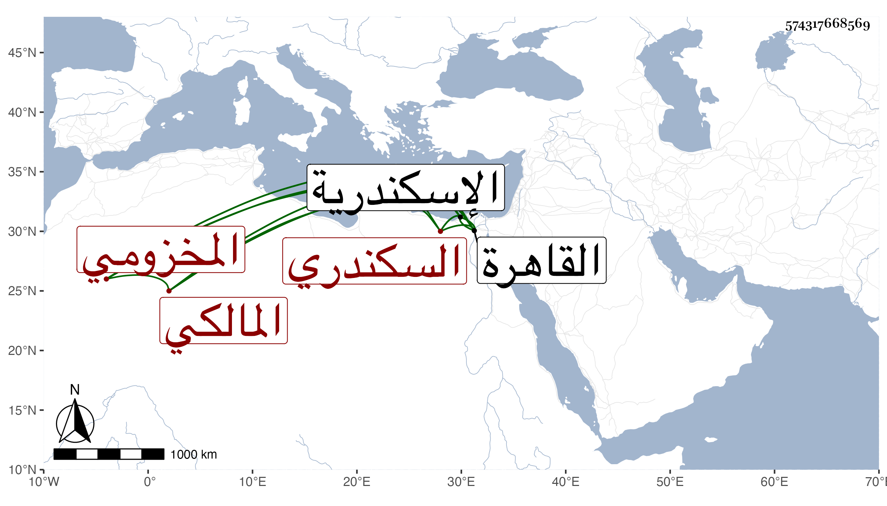

0902Sakhawi.DawLamic.ITO20230111-ara1.EIS1600.574317668569
Biography ID: 574317668569
318
أحمد بن محمد بن أبي بكر بن عمر بن أبي بكر بن محمد بن سليمان بن جعفر بن يحيى بن حسين بن محمد بن أحمد بن أبي بكر بن يوسف الشهاب ابن البدر المخزومي السكندري المالكي ويعرف بابن الدماميني . ولد في سنة تسعين وسبعمائة بالاسكندرية ونشأ بها فقرأ القرآن على الشيخ مقبل والشهاب بن اللاج وغيرهما وصلى به وحفظ الرسالة لابن أبي زيد وألفية ابن مالك والحاجبية وقطعة كبيرة من مختصر الشيخ خليل ، وتفقه عند أبيه والكمال الشمني والفقيه سعيد السكندريين وغيرهم ، وعرض مقدمة في العربية على السراج البلقيني وابن خلدون والشرف الدماميني وغيرهم وسمع الحديث على ابن الموفق وابن الخراط وابن الهزير والتاج بن موسى ، وأجاز له أبو هريرة بن الذهبي وأبو الخير بن العلائي وآخرون ، وقدم القاهرة فحدث بها سمع منه الفضلاء سمعت منه بالقاهرة ثم بالاسكندرية ، وكان إنسانا حسنا منعزلا عن الناس ذا وجاهة في بلده مع ثنائهم عليه بالخير والفضيلة لكنه كان أحد شهود الخمس ولو تعفف عنها كان أولى به وقد تعانى الأدب وقتا ، ونظر في دواوين الشعر فحفظ من ذلك جملة صالحة كان يذاكر به ، وربما نظم ومنه مما قال إن والده كتبه عنه في تذكرته في ضرير :
| وضرير قال لي إذا أظلمت | مقلتاه وسخت بالعبرات |
| طرفي البحر ودمعي درة | قلت لكن هو بحر الظلمات |
مات قريب سنة ستين تقريبا بالاسكندرية .
